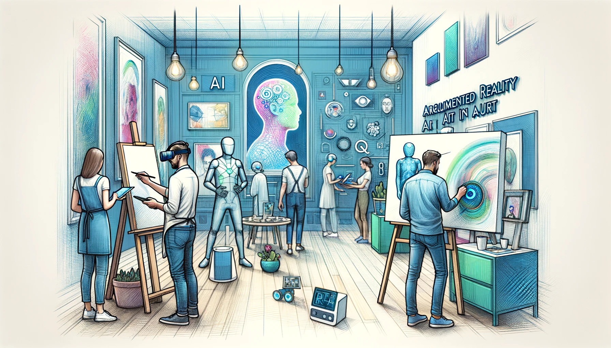
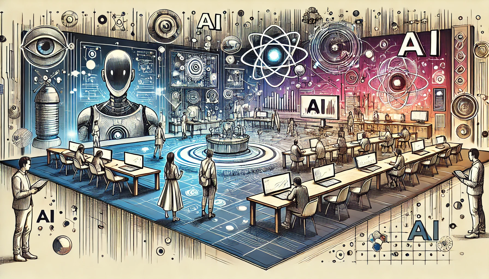
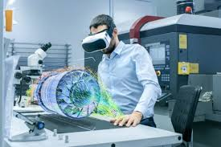
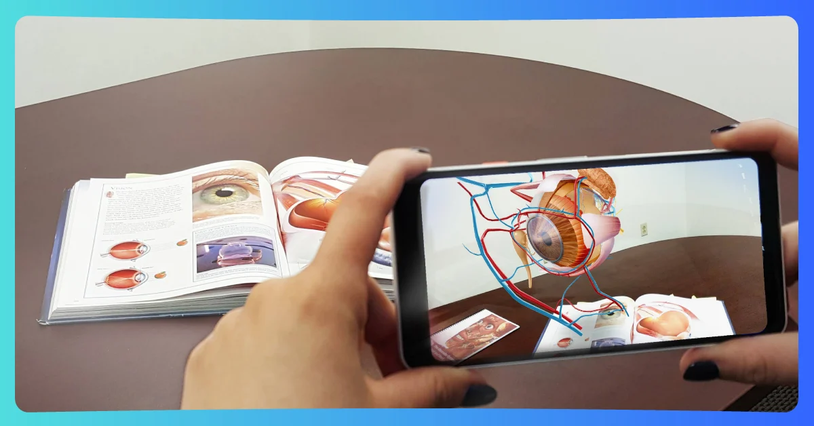

La realidad aumentada (RA) ha trascendido su etapa de tecnología emergente para convertirse en una herramienta transversal con aplicaciones en prácticamente todos los sectores de la sociedad moderna. Esta tecnología, que superpone información digital al mundo físico, está redefiniendo los paradigmas de interacción humano-tecnología. El presente ensayo analiza las principales áreas de aplicación de la RA, demostrando su versatilidad y capacidad para generar valor en contextos tan diversos como la medicina, la educación, la industria y el entretenimiento.

